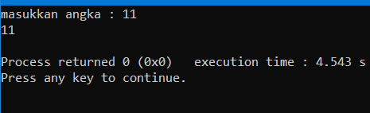

Input Pengguna
Setelah tadi kita membahas tentang output dan variabel, sekarang kita akan membahas cara memasukkan nilai ke variabel. Untuk memasukkan nilai ke variabel, kita gunakan keyword cin >>. Sebelum bisa memasukkan nilai ke variabel, kita perlu mmembuat variabel tujuan terlebih dahulu. Contoh:
#include <iostream>
using namespace std;
int main(){
int a
cout << "masukkan angka : ";
cin >> a;
cout << a << endl;
return 0;
}
